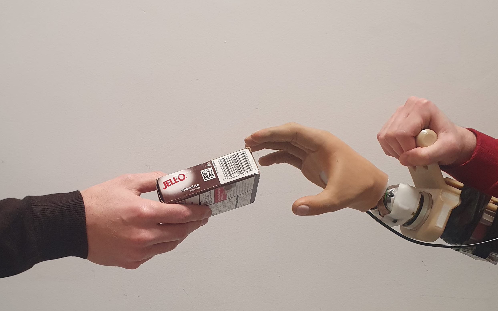

|
Carlo Alessi I'm a Postdoctoral reseacher in the Humanoid Sensing and Perception group led by Lorenzo Natale at the Italian Institute of Technology. I work on Robot Learning to enable robots to perform task in everyday environments. My research lies at the intersection of Robotics, Computer Vision and Machine Learning. |

|
Research |
|
 |
HannesImitation: Grasping with the Hannes Prosthetic Hand via Imitation Learning
Carlo Alessi, Federico Vasile, Federico Ceola, Giulia Pasquale, Nicolò Boccardo, Lorenzo Natale IEEE/RSJ International Conference on Intelligent Robots and Systems (IROS), 2025 Project Page / Paper / arXiv Grasping objects with the Hannes Prosthesis via Imitation Learning from eye-in-hand camera. |
Organized Workshops |
Invited Talks |
|
Template borrowed from here. |